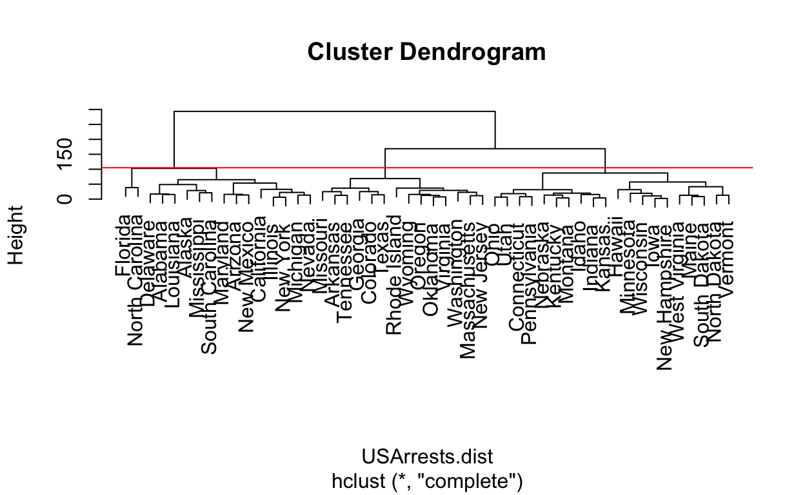
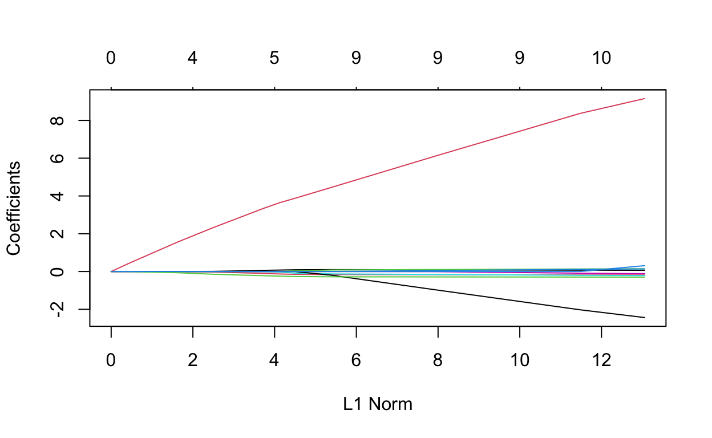
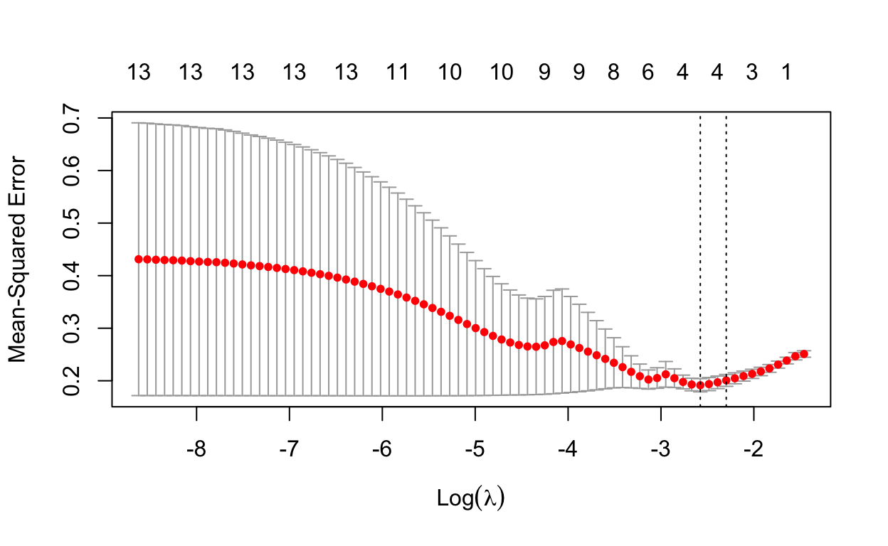
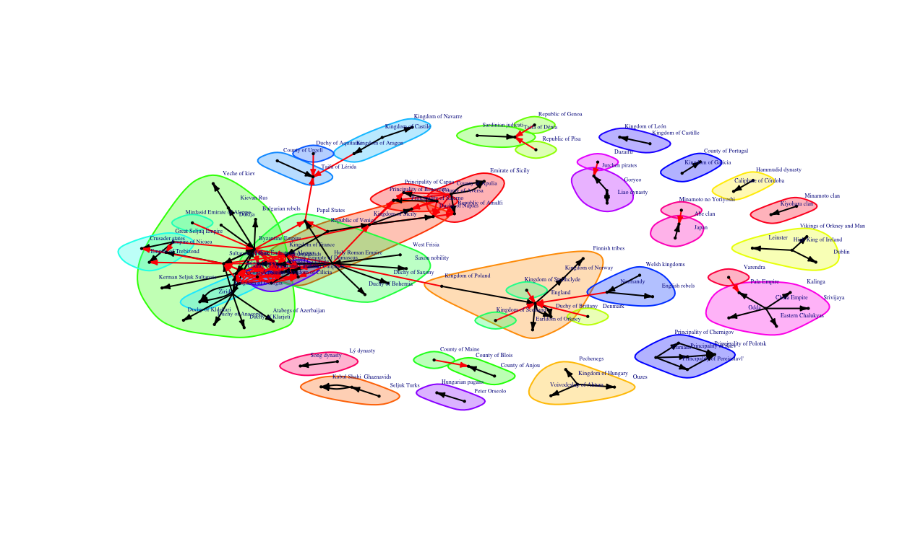

ISLR Ch. 12, Exercise 9
ISLR Ch. 12, Exercise 10
Problem Set 3
Ch. 6
Basis: In this exercise, we will predict the number of applications received using the other variables in the College data set. During my original calculations for homework 2 I did the prediction on the graduation rate rather than applications received so I will be modifying my calculations for parts a through e to reflect this and enable me to interpret part g correctly.
(a)
Question: Split the data set into a training set and a test set.
Answer: I split the data into training and test set using 1 through the number of rows in the dataset and sampling it nrow(College)*0.8 times which works out to taking 621.6 row samples with replacement equals FALSE, this equates to and 80%, 20% split in the training and test sets. I specify the college_training as the 80% of College data I specified as my training. Next I find the test set using the converse of the training rows.
(b)
Question: Fit a linear model using least squares on the training set, and report the test error obtained.
Fitting Linear Model on training set: I fit a least squares on my 80% training set below using all variables since we will be using a ridge regression that later account for the number of variables we should use as the ridge moves their coefficients towards zero. In this first regression least_squares_college all will be included
set.seed(9292)
least_squares_college <- glm(Apps ~. , data=college_training)
summary(least_squares_college)
Call:
glm(formula = Apps ~ ., data = college_training)
Deviance Residuals:
Min 1Q Median 3Q Max
-5287.0 -456.8 -34.7 322.6 7398.0
Coefficients:
Estimate Std. Error t value Pr(>|t|)
(Intercept) -416.89986 457.22350 -0.912 0.362234
PrivateYes -515.16038 153.53918 -3.355 0.000843 ***
Accept 1.67719 0.04490 37.352 < 2e-16 ***
Enroll -1.15195 0.20131 -5.722 1.66e-08 ***
Top10perc 51.69387 6.28993 8.219 1.26e-15 ***
Top25perc -14.75725 5.00799 -2.947 0.003335 **
F.Undergrad 0.06373 0.03504 1.818 0.069486 .
P.Undergrad 0.06392 0.03448 1.854 0.064285 .
Outstate -0.08220 0.02129 -3.862 0.000125 ***
Room.Board 0.12714 0.05301 2.398 0.016781 *
Books 0.19778 0.26659 0.742 0.458431
Personal 0.02882 0.06946 0.415 0.678341
PhD -10.03409 5.28070 -1.900 0.057891 .
Terminal -1.63473 5.71321 -0.286 0.774876
S.F.Ratio 14.00498 15.50514 0.903 0.366755
perc.alumni 1.14932 4.64636 0.247 0.804715
Expend 0.06620 0.01426 4.642 4.24e-06 ***
Grad.Rate 8.80380 3.38925 2.598 0.009618 **
---
Signif. codes: 0 '***' 0.001 '**' 0.01 '*' 0.05 '.' 0.1 ' ' 1
(Dispersion parameter for gaussian family taken to be 1095060)
Null deviance: 9396783054 on 620 degrees of freedom
Residual deviance: 660321185 on 603 degrees of freedom
AIC: 10418
Number of Fisher Scoring iterations: 2Obtaining Test MSE: In order to obtain test error I use the predict function and the least_squares_college linear model in my previous code and apply it to my test data. I report test error as Mean Squared error which is calculated below as the difference between the true value of the number of applications minus the predicted number, squared. I obtain a result of 1,094,646 as my MSE.
set.seed(9292)
pred_college_for_mse <- predict(least_squares_college, newdata=college_test)
MSE_college_test <- mean((college_test$Apps-pred_college_for_mse)^2)
MSE_college_test %>% kable()
| x |
|---|
| 1094646 |
(c)
Question: Fit a ridge regression model on the training set, with lambda chosen by cross-validation. Report the test error obtained.
Answer: Below I make a grid of values that is a sequence of 10 to -2 of length 100 which goes from 10^10 to 10^(-2) and creates a set of selected values. In order to fit a ridge model using cross validation I split the model into training and test set. Using the glmnet() function I then plug in my x-ridge model matrix and the y-ridge being the true values from the graduation rate column of the college dataset. This results in a dimension of 18 by 100.
set.seed(9292)
x_ridge <- model.matrix(Apps ~ ., College)[, -1]
y_ridge <- College$Apps
grid <- 10^seq(10, -2, length = 100)
ridge.mod <- glmnet(x_ridge, y_ridge, alpha = 0, lambda = grid)
dim(coef(ridge.mod))
[1] 18 100Answer: Below I then split my data into an 80% 20% split between training and test sets. These values are stored in the train_ridge and test_ridge variables.
Answer: I then use the glmnet() function with an alpha of 0 which is a ridge penalty in this case. In this scenario the function is named ridge.mod, this is then put into predict() where it predicts on the test section of the data. The resulting mean squared error is 1,082,823 which is a 11,823 unit improvement over the original GLM with no variable coefficinets moved towards zero.
set.seed(9292)
ridge.mod <- glmnet(x_ridge[train_ridge, ], y_ridge[train_ridge],
alpha = 0, lambda = grid, thresh = 1e-12)
ridge.pred <- predict(ridge.mod, s = 4, newx = x_ridge[test_ridge,])
mean((ridge.pred - y.test_ridge)^2) %>% kable()
| x |
|---|
| 1082823 |
Answer: Afterwards we fit the model again using the glmnet() function ridge.mod using a new x from x_ridge and our x and y from training. We then access the 18 coefficients below, as can be seen the ridge moves the coefficients it decides have little impact towards zero.
set.seed(9292)
ridge.pred <- predict(ridge.mod, s = 0, newx = x_ridge[test_ridge, ],
exact = T, x = x_ridge[train_ridge, ],
y = y_ridge[train_ridge])
predict(ridge.mod, s = 0, exact = T, type = "coefficients",
x = x_ridge[train_ridge, ], y = y_ridge[train_ridge])[1:18, ]
(Intercept) PrivateYes Accept Enroll Top10perc
-416.91598640 -515.16078508 1.67718327 -1.15190837 51.69345986
Top25perc F.Undergrad P.Undergrad Outstate Room.Board
-14.75698190 0.06372381 0.06391797 -0.08220220 0.12713933
Books Personal PhD Terminal S.F.Ratio
0.19778375 0.02881838 -10.03405966 -1.63474983 14.00500428
perc.alumni Expend Grad.Rate
1.14916782 0.06620367 8.80384229 Answer continued: Next after beginning these tests we use cross validation to get the optimal tuning parameters from a number of repetitions using cv.glmnet() in this case it takes our training values and an alpha of zero to indicate it is a ridge and uses a number of values of lambda to determine which minimizes mean squared errors. This is plotted below
Answer continued: The cv.out we calculated above outputs a 1se and min lambda for its mean square errors which I access below to determine the cross validated tuning parameter.
set.seed(9292)
bestlam <- cv.out$lambda.min
bestlam
[1] 367.1318Answer continued: Finally we use out predict function to see what our mean squared error will be for our tuning parameters than minimizes MSE, in this case it is 924,234.4 as seen below compared to the grid values which yielded a 1,082,823 at best.
set.seed(9292)
ridge.pred <- predict(cv.out, s = bestlam, newx = x_ridge[test_ridge,])
mean((ridge.pred - y.test_ridge)^2) %>% kable()
| x |
|---|
| 924234.4 |
Answer continued: The coefficient outputs for the lambda that minimizes MSE are then expressed below. Here a number of coefficients remain in the function when predicting the number of applications received using a ridge regression.
set.seed(9292)
out <- glmnet(x_ridge[train_ridge, ], y_ridge[train_ridge], alpha = 0)
predict(out, type = "coefficients", s = bestlam)[1:18, ]
(Intercept) PrivateYes Accept Enroll Top10perc
-1.430977e+03 -5.496801e+02 1.057014e+00 3.353268e-01 2.631621e+01
Top25perc F.Undergrad P.Undergrad Outstate Room.Board
2.162225e-01 6.242687e-02 4.495189e-02 -2.214940e-02 1.867657e-01
Books Personal PhD Terminal S.F.Ratio
2.235599e-01 -4.416771e-03 -4.635434e+00 -3.857974e+00 1.069120e+01
perc.alumni Expend Grad.Rate
-6.993849e+00 6.707918e-02 1.128735e+01 (d)
Question: Fit a lasso model on the training set, with lambda chosen by cross validation. Report the test error obtained, along with the number of non-zero coefficient estimates.
Answer: The process of creating the lasso is largely similar to that of the ridge though here our initial glmnet() takes an alpha of 1. The plot below this indicates that depending on our choice of tuning parameter lambda, certain coefficients will become zero.
Answer continued: We continue this analysis by cross validation using cv.glmnet() with an alpha of 1 to find the coefficients that again, minimize the MSE.
Answer continued: After this cross validation has been calculated we then access the lambda that minimizes MSE. We then use the predict function to calculate predictions for our lasso using the lambda that minimizes MSE this gets a MSE of 1,082,717.
set.seed(9292)
bestlam <- cv.out_2$lambda.min
lasso.pred <- predict(cv.out_2, s = bestlam, newx = x_ridge[test_ridge,])
mean((lasso.pred - y.test_ridge)^2) %>% kable()
| x |
|---|
| 1082717 |
Answer continued: Finally we calculate and show the coefficients for our equation with the lasso reducing our number of parameters by moving coefficients towards zero that have low impacts.
set.seed(9292)
out <- glmnet(x_ridge[train_ridge, ], y_ridge[train_ridge],
alpha = 1, lambda = grid)
lasso.coef <- predict(out, type = "coefficients", s = bestlam)[1:18, ]
lasso.coef
(Intercept) PrivateYes Accept Enroll Top10perc
-436.97702003 -509.30206039 1.66235527 -1.04564674 50.11691793
Top25perc F.Undergrad P.Undergrad Outstate Room.Board
-13.46352450 0.05004629 0.06386337 -0.07961429 0.12494655
Books Personal PhD Terminal S.F.Ratio
0.19037707 0.02565307 -9.86601233 -1.42155634 13.00502224
perc.alumni Expend Grad.Rate
0.44253226 0.06559830 8.53311793 (g)
Basis: Comment on the results obtained. How accurately can we predict the number of college applications received? Is there much difference among the test errors resulting from these five approaches?
Answer: The results are relatively similar across the 3 models. Mean squared errors are close to a million with some methods improving by about 10,000 though still making quite high MSE. No method appears to significantly alter the results of the regression with lasso not appearing to move any coefficients towards zero and drop the impact of any particular variaable.
Ch. 12, Exercise 8
Basis: In Section 12.2.3, a formula for calculating PVE was given in Equation 12.10. We also saw that the PVE can be obtained using the sdev output of the prcomp() function. On the USArrests data, calculate PVE in two ways:
Part (a)
Basis: Using the sdev output of the prcomp() function, as was done in Section 12.2.3.
Answer: Using sdev and prcomp() on USA arrests on USArrests as in 12.2.3 we first start by using our principal component function prcomp(), inside of this we add USArrests and scale our variables for consistency. These princpal components are represented by pr.out
pr.out <- prcomp(USArrests, scale = TRUE)
pr.out
Standard deviations (1, .., p=4):
[1] 1.5748783 0.9948694 0.5971291 0.4164494
Rotation (n x k) = (4 x 4):
PC1 PC2 PC3 PC4
Murder -0.5358995 0.4181809 -0.3412327 0.64922780
Assault -0.5831836 0.1879856 -0.2681484 -0.74340748
UrbanPop -0.2781909 -0.8728062 -0.3780158 0.13387773
Rape -0.5434321 -0.1673186 0.8177779 0.08902432Answer 2: Next we see 4 names in the output of our principal component function results, one of which is sdev which will need to calculate our PVE.
names(pr.out)
[1] "sdev" "rotation" "center" "scale" "x" dim(pr.out$x)
[1] 50 4biplot(pr.out, scale = 0)
Answer 3: We see our 4 sdev, or standard deviations for Murder, Assault, UrbanPop and Rape.
pr.out$sdev %>% kable()
| x |
|---|
| 1.5748783 |
| 0.9948694 |
| 0.5971291 |
| 0.4164494 |
Answer 4: First we square our sdevs to acquire our variance.
pr.var <- pr.out$sdev^2
pr.var
[1] 2.4802416 0.9897652 0.3565632 0.1734301Answer 5: Next we divide these values of our variance by their sum in the denominator.
pve <- pr.var / sum(pr.var)
pve
[1] 0.62006039 0.24744129 0.08914080 0.04335752(b)
Basis: By applying Equation 12.10 directly. That is, use the prcomp() function to compute the principal component loadings. Then, use those loadings in Equation 12.10 to obtain the PVE.
Answer: In order to obtain PVE directly we must first obtain our loadings using prcomp, which I caclualted earlier as pr.out <- prcomp(USArrests, scale = TRUE). The loadings are represented as the rotations of the principal component. I then multiply these by the matrix of scaled USArrests observations which have each state represented with each of the 4 variables, Using matrix multiplication on the USArrests data and loadings we have the first part of the top of 12.10, this is then squared and summed. This is then divided by the sum of the previously calculated squared matrix multipliation. This results in identical PVEs to those obtained by code alone.
USArrests_scaled <- scale(USArrests)
#dim(USArrests_scaled)
loadings <- pr.out$rotation
# dim(loadings)
loadings_times_var <- (USArrests_scaled %*% loadings)
sum_squares <- apply(loadings_times_var^2, 2, sum)
sum_squares / sum(sum_squares)
PC1 PC2 PC3 PC4
0.62006039 0.24744129 0.08914080 0.04335752 Ch. 12, Exercise 9
Basis: Consider the USArrests data. We will now perform hierarchical clustering on the states.
(a)
Basis: Using hierarchical clustering with complete linkage and Euclidean distance, cluster the states.
Answer: Below I use hierarchical clustering on the US states, this is done using the dist() function between states in the USArrests matrix, by default this uses eucliean distance, no diagonal or upper portion of the data which would repeat the values below the matrix diagonal. Next I use hclust() which performs hierarchical clustering with complete linkage.
# First dist() is used on USArrests to compute euclidean
# distance between the observations in each state.
USArrests.dist <- dist(USArrests)
# Next I acquire the labels from the dendrogram graph using the labels
# From USArrests
USArrest.labs <- rownames(USArrests)
plot(hclust(USArrests.dist, method="complete"), xlab = "",
sub = "", ylab = "", main = "Complete Linkage")
(b)
Basis: Cut the dendrogram at a height that results in three distinct clusters. Which states belong to which clusters?
Answer: Below I have used the function cutree, which cuts a tree specified in an hclust() into a spcified number of groups, in this case 3. After running this function I manually extract the rows from the table that represent state membership into each group with having a 1, as opposed to a zero in that group representing that the observation belongs to it.
set.seed(8437)
# First I use clust() on our USArrests euclidean distance with complete linkage
# Next I use cutree() to cut the USArrests.dist data into 3 clusters.
hc.clusters <- cutree(hclust(USArrests.dist, method="complete"), 3)
# I then add these to a table with each observations repective label
table_with_3_clusters <- table(hc.clusters, USArrest.labs)
# I then take all 3 rows on their own
table_with_3_clusters_r1 <- table_with_3_clusters[1,]
table_with_3_clusters_r2 <- table_with_3_clusters[2,]
table_with_3_clusters_r3 <- table_with_3_clusters[3,]
# I finally take these rows and find when they are eqivalent to one since
# each row is a group and 1 indicates the state belongs to it.
table_with_3_clusters_r1[table_with_3_clusters_r1 == 1] %>% kable()
| x | |
|---|---|
| Alabama | 1 |
| Alaska | 1 |
| Arizona | 1 |
| California | 1 |
| Delaware | 1 |
| Florida | 1 |
| Illinois | 1 |
| Louisiana | 1 |
| Maryland | 1 |
| Michigan | 1 |
| Mississippi | 1 |
| Nevada | 1 |
| New Mexico | 1 |
| New York | 1 |
| North Carolina | 1 |
| South Carolina | 1 |
table_with_3_clusters_r2[table_with_3_clusters_r2 == 1] %>% kable()
| x | |
|---|---|
| Arkansas | 1 |
| Colorado | 1 |
| Georgia | 1 |
| Massachusetts | 1 |
| Missouri | 1 |
| New Jersey | 1 |
| Oklahoma | 1 |
| Oregon | 1 |
| Rhode Island | 1 |
| Tennessee | 1 |
| Texas | 1 |
| Virginia | 1 |
| Washington | 1 |
| Wyoming | 1 |
table_with_3_clusters_r3[table_with_3_clusters_r3 == 1] %>% kable()
| x | |
|---|---|
| Connecticut | 1 |
| Hawaii | 1 |
| Idaho | 1 |
| Indiana | 1 |
| Iowa | 1 |
| Kansas | 1 |
| Kentucky | 1 |
| Maine | 1 |
| Minnesota | 1 |
| Montana | 1 |
| Nebraska | 1 |
| New Hampshire | 1 |
| North Dakota | 1 |
| Ohio | 1 |
| Pennsylvania | 1 |
| South Dakota | 1 |
| Utah | 1 |
| Vermont | 1 |
| West Virginia | 1 |
| Wisconsin | 1 |
Answer 2: I then plot the results below using a red line at a level which creates 3 groups.
plot(hclust(USArrests.dist, method="complete"), labels = USArrest.labs)
abline(h = 100, col = "red")

(c)
Basis: Hierarchically cluster the states using complete linkage and Euclidean distance, after scaling the variables to have standard deviation one.
Answer: In this problem I follow largely the same as before with the exception of the scaling of the USArrests data to have a mean of 0 and a standard deviation of 1. This is first done with the scale() function.
set.seed(213)
# First I use the scale function to scale the observations to the std of 1
# and mean of zero this is done with scale()
USArrests_scaled_c <- scale(USArrests)
# Next I compute the distance with dist() specifying that it will be using
# The euclidean method, though this is the default.
USArrests_scaled_c.dist <- dist(USArrests_scaled_c, method = "euclidean" )
# Next I find labels using the rownames from the dataset.
USArrests_scaled.labs <- rownames(USArrests_scaled_c)
# Finally I use the hclust() function to apply hierarchical clustering to the
# data, in this case using complete clustering.
hclust_USArrests_scaled_c <- hclust(USArrests_scaled_c.dist, method="complete")
plot(hclust_USArrests_scaled_c, xlab = "", sub = "", ylab = "",
labels = USArrests_scaled.labs, main = "Complete Linkage")
(d)
Basis: What effect does scaling the variables have on the hierarchical clustering obtained? In your opinion, should the variables be scaled before the inter-observation dissimilarities are computed? Provide a justification for your answer.
Answer: Scaling the variables breaks them into far more small clusters and likely distinguishes them more closely at more levels. This is likely as distinguishing between groups will be based on a common scale that reduces possible scale differences within the dataset. As a result of this I would argue that scaling is beneficial, though the data is per 100,000 residents so it is scaled to some extent, certain states have far higher density and population so the meaning of per-100,000 can have differing impact. Though it likely helps to have all variables on the same scale it is not as useful as it would be in a scenario with variables using a different basis of measurement from one another, such as total deaths and deaths per-100,000 residents, or percent of violent crimes in the state. I
Ch. 12, Exercise 10
Basis: In this problem, you will generate simulated data, and then perform PCA and K-means clustering on the data.
(a)
Basis: Generate a simulated data set with 20 observations in each of three classes (i.e.60 observations total), and 50 variables.
Hint: There are a number of functions in R that you can use to generate data. One example is the rnorm() function; runif() is another option. Be sure to add a mean shift to the observations in each class so that there are three distinct classes.
Answer: In order to generate 20 observations of 3 classes I used the code and random generation functions below.
set.seed(280)
# First I take an rnorm with 20 observation and 3 different means
# and 3 different standard deviations to observe the effect of this
# In generating principal components, I then use replicate to run this
# simulation for 50 variables so it is replacted 50 times
df_1_10 <- as.data.frame(replicate(50, rnorm(n=20, mean=0, sd = 2)))
colnames(df_1_10)[1] <- "V1"
# I repeat this again with different mean and sd
df_2_10<-as.data.frame(replicate(50, rnorm(n=20, mean=0.5, sd= 0.8)))
colnames(df_2_10)[1] <- "V1"
# I then combine data frams
df_2_10_combined <- rbind(df_1_10, df_2_10)
# I repeat this again with different mean and sd
df_3_10 <- as.data.frame(replicate(50, rnorm(n=20, mean=1)))
colnames(df_3_10)[1] <- "V1"
# All data frames are then combined, after which I label the rows as to
# know which class they are in.
big_df_combined_10 <- rbind(df_2_10_combined, df_3_10)
big_df_combined_10$groups <- NA
big_df_combined_10$groups[1:20] <- "1"
big_df_combined_10$groups[21:40] <- "2"
big_df_combined_10$groups[41:60] <- "3"
(b)
Basis: Perform PCA on the 60 observations and plot the first two principal component score vectors. Use a different color to indicate the observations in each of the three classes. If the three classes appear separated in this plot, then continue on to part (c). If not, then return to part (a) and modify the simulation so that there is greater separation between the three classes. Do not continue to part (c) until the three classes show at least some separation in the first two principal component score vectors.
Answer: Next I perform PCA on the 60 randomly generated observations.
# I perform principal components on all by column 51 as this column has the
# Group numbers in it for later reference.
pca_10_b <- prcomp(big_df_combined_10[-51])
Answer Continued: Using the base R plot function below we see that the components have separated noticeably. The black points on the right have the highest standard deviation of 2 while the red in the middle have a smaller standard deviation of 0.8 while the green points on the far right have an standard deviation of 1.
plot(pca_10_b$x[, 1:2], pch=17, col = (big_df_combined_10$groups),
xlab = "P1", ylab = "P2")
(c)
Basis: Perform K-means clustering of the observations with K = 3. How well do the clusters that you obtained in K-means clustering compare to the true class labels?
Answer: Though it is difficult to interpret in some ways due to class labels, it appears as if K-means put all of the correct observations in group 2 and 3 but mis-classified many in group 1, for this see it put 9 in the incorrect groups. This is understandable as this group was created in my simulated data using the highest variance so it is concieveable that if its standard deviation was lower the algorithm would classify it more accurately, however in this case it was often incorrect.
set.seed(928)
km.out <- kmeans(big_df_combined_10[-51], centers=3)
km.clusters <- km.out$cluster
table(km.clusters, big_df_combined_10$groups)
km.clusters 1 2 3
1 8 0 0
2 11 0 0
3 1 20 20(d)
Basis: Perform K-means clustering with K = 2. Describe your results.
Answer: In this case using 2 cluster will force the clusters to go from 2 to 3 which we see in the km.out$cluster output being only groups one and two. I this case it assigns all points that would be in the third cluster to the first cluster which outputs results of a 3, 20, 20.
set.seed(75903)
km.out <- kmeans(big_df_combined_10[-51], centers=2, nstart = 20)
km.clusters <- km.out$cluster
table(km.clusters, big_df_combined_10$groups)
km.clusters 1 2 3
1 3 20 20
2 17 0 0(e)
Basis:Now perform K-means clustering with K = 4, and describe your results.
Answer: Similarly to part d above the algorithm assigns points to a cluster that is not truly in the group assigning most points to what are truly groups 2 and 3 in the original km.clusters, however groups 1 and 3 in the new clusters take the remaining points and split them into 2 clusters where there was only truly one.
set.seed(98367)
km.out <- kmeans(big_df_combined_10[-51], 4)
km.clusters <- km.out$cluster
table(km.clusters, big_df_combined_10$groups)
km.clusters 1 2 3
1 8 0 0
2 3 20 1
3 9 0 0
4 0 0 19(f)
Basis: Now perform K-means clustering with K = 3 on the first two principal component score vectors, rather than on the raw data. That is, perform K-means clustering on the 60 2 matrix of which the first column is the first principal component score vector, and the second column is the second principal component score vector. Comment on the results.
Answer: Using 3 clusters in this case we find that the k-means assigns all points correctly in groups 2 and 3 in the original dataset but has difficulty with group 1. This is likely becasuse the variance in this particular group is quite large having a standard deviation of 2 compared to 0.8 and 1. The groups also appear to be incorrectly labeled as in pervious cases as the k-means algorithm picks groups 1, 2, and 3 arbitrarily while we chose them manually when making the true groups.
k.means.pcr <- kmeans(pca_10_b$x[,1:2], 3)
km.clusters <- k.means.pcr$cluster
set.seed(98367)
big_df_no_51<-big_df_combined_10[-51]
table(km.clusters, big_df_combined_10$groups)
km.clusters 1 2 3
1 9 0 0
2 0 20 20
3 11 0 0(g)
Basis: Using the scale() function, perform K-means clustering with K = 3 on the data after scaling each variable to have standard deviation one. How do these results compare to those obtained in (b)? Explain.
Answer: The results in this case are similar to that of (b) in this case my first group has a large amount of variance which has resulted in a large number of observations being placed in the group nearest to it in terms of its mean. As a result the classifications rate appears to be similar to earlier problems and most of the missclasficiations from the first group on the left in b are also being attributed to the center group, and to a lesser extent, the third group.
set.seed(756)
km.out_g <- kmeans(scale(big_df_combined_10[-51]), centers=3)
km_g.clusters <- km.out_g$cluster
table(km_g.clusters, big_df_combined_10$groups)
km_g.clusters 1 2 3
1 10 0 0
2 9 0 0
3 1 20 20Written Questions:
Question 1:
Question: Based on reading for this class, what are the main risks of algorithmic models (machine learning) from a fairness and justice perspective? What forms of modeling/learning and/or sorts of data may pose particular risks of harm? What general strategies might be employed to mitigate these risks? Can you think of any methodological advances that might be pursued by computational and statistical researchers in order to help data analysts make ethically derived predictions?
Answer: Based on the readings for this class there are a great number of potential fairness and justice risks of the use of models in many areas of life. The primary ones are the reinforcement of systems that perpetuate inequality or direct harm to a group through self-reinforcing predictions and punitive or financial outcomes. As Oneal writes the collegiate arms race has inflated prices far beyond inflation while predicted outcomes of policing models ignore white collar crimes and encourage increased policing which leads to more punitive outcomes which have far reaching social and financial consequences.
The algorithms that appear to carry the most risk are predictive algorithms in the financial and social spaces. Predicting issues such as recidivism and crime are inevitable going to reinforce the structure in the world they are meant to predict and since algorithms are stagnant they cannot evolve to do anything but reflect what they are engineered to do.
Mitigation of risk is difficult in modeling as algorithms are inherently reductive and based on the past, as a result there are areas that they simply should not be used in, perhaps the methodological advance could be
In earlier chapters, while no acknowledging fault fault, the author explains the widespread harm caused by predictive algorithms in finance that assisted in creating the 2008 housing bubble. When the bubble burst the burden of the fallout was felt by poor and middle class households who were given sub prime loan and subsequently foreclosed, lost their savings and credit. As Oneal points out these issues are due to the opaque nature in being often non-interpretable due to complexity and inherent mathematical structure. In addition the scale by which certain algorithms such as recidivism and policing.
(Project update) Data Exploration: Use appropriate methods to explore the data you plan to use for your project. (Its okay if you change your mind and use a different data set later; this exercise may help you decide.) Include some form of visualization(s) and indications of the unit of analysis, the levels of measurements (e.g.: 9 categorical features7 dichotomous and 2 with more than two categories and 14 numerical/quantitative features, for a total of 23), univariate statistics helping characterize the distribution of the features and of the outcome variable (label) you wish to predict if you will be conducting supervised learning for the project. Convey something about relationships among features (predictors). If you are going to use these for prediction, identify any preprocessing you may need to do and options available for cleaning up/transforming data and/or dimension reduction. (Submit with your group or with explanation of why you must work alone.)
Putting Network into Necessary Formats
Adding Attributes
Brokerage scores in the 1000s
Brokerage scores in the 1100s
Brokerage scores in the 1200s
wars_in_1000s_edgelist <- as.matrix(wars_in_1000s)
wars_in_1000s_edgelist_network_edgelist <-
graph.edgelist(wars_in_1000s_edgelist, directed=TRUE)
wars_in_1000s.ig<-graph_from_data_frame(wars_in_1000s)
wars_in_1000s_network <- asNetwork(wars_in_1000s.ig)
aspects_of_1000s_states <-
read_excel("~/Desktop/Spring 2022/Networks/aspects_of_1000s_states.xlsx")
total_1000s <- merge(aspects_of_1000s_states,
wars_in_1000s.nodes.stat_2, by="name")
aspects_of_1100s_states <-
read_excel("~/Desktop/Spring 2022/Networks/aspects_of_1100s_states.xlsx")
total_1100s <- merge(aspects_of_1100s_states,
wars_in_1100s.nodes.stat_2, by="name")
aspects_of_1200s_states <-
read_excel("~/Desktop/Spring 2022/Networks/aspects_of_1200s_states.xlsx")
total_1200s <- merge(aspects_of_1200s_states, wars_in_1200s.nodes.stat_2,
by="name")
total_1000s_brokerag_reg<-total_1000s
total_1000s_brokerag_reg$win_rate <- (total_1000s_brokerag_reg$outdegree/total_1000s_brokerag_reg$totdegree)
total_1000s_brokerag_reg$loss_rate <- (total_1000s_brokerag_reg$indegree/total_1000s_brokerag_reg$totdegree)
total_1000s_brokerag_reg_binom <-
total_1000s_brokerag_reg %>% mutate(more_win_or_loss = case_when(
win_rate < 0.5 ~ 0,
win_rate >= 0.5 ~ 1))
First_1000s_regression <-
glm(more_win_or_loss~.
-name-totdegree-indegree-outdegree-dc-eigen.dc-win_rate-loss_rate, total_1000s_brokerag_reg_binom, family=binomial)
First_1000s_regression
Call: glm(formula = more_win_or_loss ~ . - name - totdegree - indegree -
outdegree - dc - eigen.dc - win_rate - loss_rate, family = binomial,
data = total_1000s_brokerag_reg_binom)
Coefficients:
(Intercept) Catholic Islam Orthodox Buddhist
-2.090e+01 1.446e-01 -7.108e-02 -4.043e-01 -8.572e-02
Pagan Tengrism Shinto Hindu Shamanism
5.506e-01 -5.656e+01 1.820e+00 -2.142e+00 -1.506e+00
eigen close rc eigen.rc broker.tot
-1.877e+03 5.146e+03 -3.979e+00 1.574e+03 2.378e+02
broker.coord broker.itin broker.rep broker.gate broker.lia
-9.610e+01 -9.449e+01 -7.164e+01 -2.810e+01 -1.298e+02
Degrees of Freedom: 101 Total (i.e. Null); 82 Residual
(8 observations deleted due to missingness)
Null Deviance: 140.8
Residual Deviance: 4.53e-09 AIC: 40set.seed(292)
total_1000s_for_regression <- total_1000s[,-c(1, 20:25)]
total_1000s_for_regression$win_rate <- (total_1000s_for_regression$outdegree/total_1000s_for_regression$totdegree)
total_1000s_for_regression$loss_rate <- (total_1000s_for_regression$indegree/total_1000s_for_regression$totdegree)
total_1000s_for_regression <-
total_1000s_for_regression %>% mutate(more_win_or_loss = case_when(
win_rate < 0.5 ~ 0,
win_rate >= 0.5 ~ 1))
First_1000s_regression <- glm(more_win_or_loss~.
-loss_rate-win_rate-totdegree-indegree-outdegree-dc-eigen.dc, total_1000s_for_regression, family=binomial)
First_1000s_regression
Call: glm(formula = more_win_or_loss ~ . - loss_rate - win_rate - totdegree -
indegree - outdegree - dc - eigen.dc, family = binomial,
data = total_1000s_for_regression)
Coefficients:
(Intercept) Catholic Islam Orthodox Buddhist
-15.1948 13.9008 12.7531 14.6893 15.0858
Pagan Tengrism Shinto Hindu Shamanism
0.9610 11.6691 16.0623 9.1358 -0.1497
eigen close rc eigen.rc
-82.1100 256.5294 -3.3322 -17.3152
Degrees of Freedom: 109 Total (i.e. Null); 96 Residual
Null Deviance: 152.3
Residual Deviance: 58.4 AIC: 86.4set.seed(6738)
in_training<- sample(1:nrow(total_1000s_for_regression),
nrow(total_1000s_for_regression) * 0.7 )
training_1000s <- total_1000s_for_regression[in_training,]
test_1000s <- total_1000s_for_regression[-in_training,]
lm_1000s_binom_subset_1 <- glm(more_win_or_loss~.
-loss_rate-win_rate-totdegree-indegree-outdegree-dc-eigen.dc, total_1000s_for_regression, family=binomial, subset = in_training )
logsitic_1_1000s_prob <- predict(lm_1000s_binom_subset_1, test_1000s,
type = "response")
log_preds_1<-ifelse(logsitic_1_1000s_prob >= 0.5, 1, 0)
prediction_1_logs <-mean(log_preds_1 == test_1000s$more_win_or_loss)
prediction_1_logs %>% kable()
| x |
|---|
| 0.9090909 |
set.seed(246)
x_ridge <- model.matrix(more_win_or_loss ~ .-loss_rate-win_rate-totdegree-indegree-outdegree-dc-eigen.dc,
total_1000s_for_regression)[, -1]
y_ridge <- total_1000s_for_regression$more_win_or_loss
grid <- 10^seq(10, -2, length = 100)
ridge.mod <- glmnet(x_ridge, y_ridge, alpha = 0, lambda = grid)
dim(coef(ridge.mod))
[1] 14 100set.seed(9292)
ridge.mod <- glmnet(x_ridge[train_ridge, ], y_ridge[train_ridge],
alpha = 0, lambda = grid, thresh = 1e-12)
ridge.pred <- predict(ridge.mod, s = 4, newx = x_ridge[test_ridge,])
mean((ridge.pred - y.test_ridge)^2) %>% kable()
| x |
|---|
| 0.2416376 |
set.seed(231)
ridge.pred <- predict(ridge.mod, s = 0, newx = x_ridge[test_ridge, ],
exact = T, x = x_ridge[train_ridge, ],
y = y_ridge[train_ridge])
predict(ridge.mod, s = 0, exact = T, type = "coefficients",
x = x_ridge[train_ridge, ], y = y_ridge[train_ridge])[1:14, ]
(Intercept) Catholic Islam Orthodox Buddhist
0.21024033 0.21827317 -0.01160454 0.21312966 0.35601806
Pagan Tengrism Shinto Hindu Shamanism
0.08955257 0.14069809 0.38278477 -0.07034364 -0.01038790
eigen close rc eigen.rc
-4.61480591 12.51011844 -0.29977861 4.64835194 set.seed(9292)
cv.out <- cv.glmnet(x_ridge[train_ridge, ], y_ridge[train_ridge], alpha = 0)
plot(cv.out)

set.seed(9292)
bestlam <- cv.out$lambda.min
bestlam
[1] 0.415338set.seed(9292)
ridge.pred <- predict(cv.out, s = bestlam, newx = x_ridge[test_ridge,])
mean((ridge.pred - y.test_ridge)^2) %>% kable()
| x |
|---|
| 0.174632 |
set.seed(2897)
x_lasso <- model.matrix(more_win_or_loss ~ .-loss_rate-win_rate-totdegree-indegree-outdegree-dc-eigen.dc,
total_1000s_for_regression)[, -1]
y_lasso <- total_1000s_for_regression$more_win_or_loss
grid <- 10^seq(10, -2, length = 100)
lasso.mod <- glmnet(x_lasso, y_lasso, alpha = 0, lambda = grid)
dim(coef(lasso.mod))
[1] 14 100set.seed(9292)
lasso.mod <- glmnet(x_lasso[train_lasso, ], y_lasso[train_lasso],
alpha = 1, lambda = grid)
plot(lasso.mod)

set.seed(1029)
cv.out_2 <- cv.glmnet(x_lasso[train_lasso, ], y_lasso[train_lasso], alpha = 1)
plot(cv.out_2)

set.seed(1920)
bestlam_2 <- cv.out_2$lambda.min
lasso.pred <- predict(cv.out_2, s = bestlam_2, newx = x_ridge[test_ridge,])
mean((lasso.pred - y.test_ridge)^2) %>% kable()
| x |
|---|
| 0.1749583 |
set.seed(2739)
out <- glmnet(x_lasso[train_lasso, ], y_lasso[train_lasso],
alpha = 1, lambda = grid)
lasso.coef <- predict(out, type = "coefficients", s = bestlam_2)[1:14, ]
lasso.coef
(Intercept) Catholic Islam Orthodox Buddhist
0.42561685 0.05577020 -0.09275344 0.00000000 0.00000000
Pagan Tengrism Shinto Hindu Shamanism
0.00000000 0.00000000 0.00000000 0.00000000 0.00000000
eigen close rc eigen.rc
0.00000000 3.22570629 -0.21240622 0.00000000 Community Grouping
Label Propagation 1000s:
The first community cluster below is done using label propagation. This results in 39 groups
set.seed(23)
comm.lab<-label.propagation.community(wars_in_1000s.ig)
#Inspect clustering object
# igraph::groups(comm.lab)

Walktrap 1000s:
Walktrap classification as seen below results in 19 distinct communities.
set.seed(238)
#Run clustering algorithm: fast_greedy
wars_in_1000s.wt<-walktrap.community(wars_in_1000s.ig)
#igraph::groups(wars_in_1000s.wt)
Adding more steps resulted in 19 groups for both 10 and 20 steps.
#Run & inspect clustering algorithm: 10 steps
#igraph::groups(walktrap.community(wars_in_1000s.ig, steps=10))
#Run & inspect clustering algorithm: 20 steps
#igraph::groups(walktrap.community(wars_in_1000s.ig ,steps=20))
#Run & inspect clustering algorithm

Machine Learning, Regression and Principle Components:
Principal Components 1000s
total_1000s_for_PCA <- total_1000s_brokerag_reg_binom[-c(20:27)]
apply(total_1000s_for_PCA[-1], 2, mean)
Catholic Islam Orthodox Buddhist
0.454545455 0.181818182 0.154545455 0.063636364
Pagan Tengrism Shinto Hindu
0.036363636 0.018181818 0.054545455 0.045454545
Shamanism totdegree indegree outdegree
0.009090909 2.754545455 1.336363636 1.418181818
eigen close rc eigen.rc
0.028058711 0.023546832 0.287358773 0.003637773
dc eigen.dc more_win_or_loss
0.712641227 0.024420939 0.481818182 apply(total_1000s_for_PCA[-1], 2, var)
Catholic Islam Orthodox Buddhist
0.2502085071 0.1501251043 0.1318598832 0.0601334445
Pagan Tengrism Shinto Hindu
0.0353628023 0.0180150125 0.0520433695 0.0437864887
Shamanism totdegree indegree outdegree
0.0090909091 8.9208507089 2.6656380317 6.3189324437
eigen close rc eigen.rc
0.0076304265 0.0019575460 0.1260782284 0.0004728954
dc eigen.dc more_win_or_loss
0.1260782284 0.0056490031 0.2519599666 pr.out <- prcomp(total_1000s_for_PCA[-1], scale = TRUE)
names(pr.out)
[1] "sdev" "rotation" "center" "scale" "x" pr.out$center
Catholic Islam Orthodox Buddhist
0.454545455 0.181818182 0.154545455 0.063636364
Pagan Tengrism Shinto Hindu
0.036363636 0.018181818 0.054545455 0.045454545
Shamanism totdegree indegree outdegree
0.009090909 2.754545455 1.336363636 1.418181818
eigen close rc eigen.rc
0.028058711 0.023546832 0.287358773 0.003637773
dc eigen.dc more_win_or_loss
0.712641227 0.024420939 0.481818182 pr.out$scale
Catholic Islam Orthodox Buddhist
0.50020846 0.38745981 0.36312516 0.24522122
Pagan Tengrism Shinto Hindu
0.18805000 0.13422002 0.22813016 0.20925221
Shamanism totdegree indegree outdegree
0.09534626 2.98677932 1.63267818 2.51374868
eigen close rc eigen.rc
0.08735231 0.04424416 0.35507496 0.02174616
dc eigen.dc more_win_or_loss
0.35507496 0.07515985 0.50195614 biplot(pr.out, scale = 0)
set.seed(172)
ggbiplot(pr.out, labels = total_1000s_for_PCA$name, labels.size =1.5) +
labs(title="Principal Components 1000s")+ theme_minimal()
pr.out$rotation = -pr.out$rotation
pr.out$x = -pr.out$x
biplot(pr.out, scale = 0)
pr.out$sdev
[1] 2.217501e+00 1.681548e+00 1.239242e+00 1.211199e+00 1.065982e+00
[6] 1.037692e+00 1.029507e+00 1.011117e+00 1.005425e+00 9.514802e-01
[11] 8.848499e-01 7.782431e-01 6.162540e-01 4.426224e-01 2.541422e-01
[16] 1.091189e-01 7.597269e-16 6.258811e-16 2.174635e-16pr.var <- pr.out$sdev^2
pr.var
[1] 4.917311e+00 2.827605e+00 1.535720e+00 1.467004e+00 1.136318e+00
[6] 1.076804e+00 1.059884e+00 1.022359e+00 1.010879e+00 9.053146e-01
[11] 7.829594e-01 6.056623e-01 3.797690e-01 1.959146e-01 6.458828e-02
[16] 1.190694e-02 5.771849e-31 3.917271e-31 4.729037e-32pve <- pr.var / sum(pr.var)
pve
[1] 2.588059e-01 1.488213e-01 8.082739e-02 7.721075e-02 5.980622e-02
[6] 5.667390e-02 5.578337e-02 5.380835e-02 5.320417e-02 4.764814e-02
[11] 4.120839e-02 3.187696e-02 1.998784e-02 1.031129e-02 3.399383e-03
[16] 6.266808e-04 3.037815e-32 2.061722e-32 2.488967e-33Label Propagation 1100s:
The first community cluster below is done using label propagation. This results in 39 groups
set.seed(23)
comm.lab<-label.propagation.community(wars_in_1100s.ig)
#Inspect clustering object
# igraph::groups(comm.lab)

Walktrap 1000s:
Walktrap classification as seen below results in 19 distinct communities.
set.seed(238)
#Run clustering algorithm: fast_greedy
wars_in_1100s.wt<-walktrap.community(wars_in_1100s.ig)
#igraph::groups(wars_in_1000s.wt)
Adding more steps resulted in 19 groups for both 10 and 20 steps.
#Run & inspect clustering algorithm: 10 steps
#igraph::groups(walktrap.community(wars_in_1000s.ig, steps=10))
#Run & inspect clustering algorithm: 20 steps
#igraph::groups(walktrap.community(wars_in_1000s.ig ,steps=20))
#Run & inspect clustering algorithm

Principal Components 1200s
names(total_1200s)
[1] "name" "Catholic" "Islam" "Orthodox"
[5] "Buddhist" "Pagan" "Tengrism" "Shinto"
[9] "Hindu" "Shamanism" "totdegree" "indegree"
[13] "outdegree" "eigen" "rc" "eigen.rc"
[17] "dc" "eigen.dc" "broker.tot" "broker.coord"
[21] "broker.itin" "broker.rep" "broker.gate" "broker.lia" total_1200s_brokerag_reg<-total_1200s
total_1200s_brokerag_reg$win_rate <- (total_1200s_brokerag_reg$outdegree/total_1200s_brokerag_reg$totdegree)
total_1200s_brokerag_reg$loss_rate <- (total_1200s_brokerag_reg$indegree/total_1200s_brokerag_reg$totdegree)
total_1200s_brokerag_reg_binom <-
total_1200s_brokerag_reg %>% mutate(more_win_or_loss = case_when(
win_rate < 0.5 ~ 0,
win_rate >= 0.5 ~ 1))
total_1200s_for_PCA <- total_1200s_brokerag_reg_binom[-c(20:27)]
apply(total_1200s_for_PCA[-1], 2, mean)
Catholic Islam Orthodox Buddhist Pagan
0.712500000 0.068750000 0.087500000 0.087500000 0.012500000
Tengrism Shinto Hindu Shamanism totdegree
0.025000000 0.000000000 0.006250000 0.000000000 3.918750000
indegree outdegree eigen rc eigen.rc
1.962500000 1.956250000 0.025567955 0.158754617 0.002192746
dc eigen.dc broker.tot
0.841245383 0.023375209 0.341581810 apply(total_1200s_for_PCA[-1], 2, var)
Catholic Islam Orthodox Buddhist Pagan
2.061321e-01 6.442610e-02 8.034591e-02 8.034591e-02 1.242138e-02
Tengrism Shinto Hindu Shamanism totdegree
2.452830e-02 0.000000e+00 6.250000e-03 0.000000e+00 2.666631e+01
indegree outdegree eigen rc eigen.rc
6.237579e+00 1.595405e+01 5.631476e-03 7.141295e-02 7.316162e-05
dc eigen.dc broker.tot
7.141295e-02 4.574350e-03 3.001236e+01 # I cannot scale variables with
total_1200s_for_PCA<-total_1200s_for_PCA[-c(8,10)]
pr.out_2 <- prcomp(total_1200s_for_PCA[-1], scale = TRUE)
names(pr.out_2)
[1] "sdev" "rotation" "center" "scale" "x" pr.out_2$center
Catholic Islam Orthodox Buddhist Pagan
0.712500000 0.068750000 0.087500000 0.087500000 0.012500000
Tengrism Hindu totdegree indegree outdegree
0.025000000 0.006250000 3.918750000 1.962500000 1.956250000
eigen rc eigen.rc dc eigen.dc
0.025567955 0.158754617 0.002192746 0.841245383 0.023375209
broker.tot
0.341581810 pr.out_2$scale
Catholic Islam Orthodox Buddhist Pagan
0.454017704 0.253822971 0.283453545 0.283453545 0.111451261
Tengrism Hindu totdegree indegree outdegree
0.156615139 0.079056942 5.163943541 2.497514488 3.994251963
eigen rc eigen.rc dc eigen.dc
0.075043164 0.267232010 0.008553457 0.267232010 0.067633938
broker.tot
5.478353760 biplot(pr.out_2, scale = 0)
pr.out_2$rotation = -pr.out_2$rotation
pr.out_2$x = -pr.out_2$x
biplot(pr.out_2, scale = 0)
set.seed(8192)
ggbiplot(pr.out_2, labels = total_1200s_for_PCA$name,
labels.size =1.5) + labs(title="Principal Components 1200s")+
theme_minimal()
pr.out$sdev
[1] 2.217501e+00 1.681548e+00 1.239242e+00 1.211199e+00 1.065982e+00
[6] 1.037692e+00 1.029507e+00 1.011117e+00 1.005425e+00 9.514802e-01
[11] 8.848499e-01 7.782431e-01 6.162540e-01 4.426224e-01 2.541422e-01
[16] 1.091189e-01 7.597269e-16 6.258811e-16 2.174635e-16pr.var_2 <- pr.out_2$sdev^2
pr.var_2
[1] 4.903737e+00 2.344663e+00 1.670548e+00 1.250176e+00 1.132904e+00
[6] 1.097802e+00 1.011326e+00 9.460639e-01 8.661454e-01 5.139677e-01
[11] 1.659928e-01 9.667541e-02 2.916516e-30 4.832251e-31 2.292490e-31
[16] 1.889562e-32pve_2 <- pr.var_2 / sum(pr.var_2)
pve_2
[1] 3.064835e-01 1.465414e-01 1.044092e-01 7.813602e-02 7.080651e-02
[6] 6.861260e-02 6.320785e-02 5.912899e-02 5.413409e-02 3.212298e-02
[11] 1.037455e-02 6.042213e-03 1.822822e-31 3.020157e-32 1.432806e-32
[16] 1.180977e-33Label Propagation 1200s:
The first community cluster below is done using label propagation. This results in 39 groups
set.seed(23)
comm.lab<-label.propagation.community(wars_in_1200s.ig)
#Inspect clustering object
# igraph::groups(comm.lab)

Walktrap 1200s:
Walktrap classification as seen below results in 19 distinct communities.
set.seed(238)
#Run clustering algorithm: fast_greedy
wars_in_1200s.wt<-walktrap.community(wars_in_1200s.ig)
#igraph::groups(wars_in_1000s.wt)
Adding more steps resulted in 19 groups for both 10 and 20 steps.
#Run & inspect clustering algorithm: 10 steps
#igraph::groups(walktrap.community(wars_in_1000s.ig, steps=10))
#Run & inspect clustering algorithm: 20 steps
#igraph::groups(walktrap.community(wars_in_1000s.ig ,steps=20))
#Run & inspect clustering algorithm

Principal Components 1100s
names(total_1100s)
[1] "name" "Catholic" "Islam" "Orthodox"
[5] "Buddhist" "Pagan" "Tengrism" "Shinto"
[9] "Hindu" "Shamanism" "totdegree" "indegree"
[13] "outdegree" "eigen" "rc" "eigen.rc"
[17] "dc" "eigen.dc" "broker.tot" "broker.coord"
[21] "broker.itin" "broker.rep" "broker.gate" "broker.lia" total_1100s_brokerag_reg<-total_1100s
total_1100s_brokerag_reg$win_rate <- (total_1100s_brokerag_reg$outdegree/total_1100s_brokerag_reg$totdegree)
total_1100s_brokerag_reg$loss_rate <- (total_1100s_brokerag_reg$indegree/total_1100s_brokerag_reg$totdegree)
total_1100s_brokerag_reg_binom <-
total_1100s_brokerag_reg %>% mutate(more_win_or_loss = case_when(
win_rate < 0.5 ~ 0,
win_rate >= 0.5 ~ 1))
total_1100s_for_PCA <- total_1100s_brokerag_reg_binom[-c(20:27)]
apply(total_1100s_for_PCA[-1], 2, mean)
Catholic Islam Orthodox Buddhist Pagan
0.578947368 0.157894737 0.042105263 0.042105263 0.105263158
Tengrism Shinto Hindu Shamanism totdegree
0.000000000 0.042105263 0.031578947 0.000000000 4.884210526
indegree outdegree eigen rc eigen.rc
2.505263158 2.378947368 0.036211017 0.177160501 0.005625786
dc eigen.dc broker.tot
0.822839499 0.030585231 -0.243595160 apply(total_1100s_for_PCA[-1], 2, var)
Catholic Islam Orthodox Buddhist Pagan
2.463606e-01 1.343785e-01 4.076148e-02 4.076148e-02 9.518477e-02
Tengrism Shinto Hindu Shamanism totdegree
0.000000e+00 4.076148e-02 3.090705e-02 0.000000e+00 2.689071e+01
indegree outdegree eigen rc eigen.rc
9.529227e+00 1.819530e+01 9.313111e-03 5.984348e-02 6.128935e-04
dc eigen.dc broker.tot
5.984348e-02 5.883890e-03 7.605503e+00 # I cannot scale variables with
total_1100s_for_PCA<-total_1100s_for_PCA[-c(8,10)]
names(pr.out_2)
[1] "sdev" "rotation" "center" "scale" "x" pr.out_2$center
Catholic Islam Orthodox Buddhist Pagan
0.578947368 0.157894737 0.042105263 0.042105263 0.105263158
Hindu totdegree indegree outdegree eigen
0.031578947 4.884210526 2.505263158 2.378947368 0.036211017
rc eigen.rc dc eigen.dc broker.tot
0.177160501 0.005625786 0.822839499 0.030585231 -0.243595160 pr.out_2$scale
Catholic Islam Orthodox Buddhist Pagan Hindu
0.49634724 0.36657673 0.20189472 0.20189472 0.30852029 0.17580402
totdegree indegree outdegree eigen rc eigen.rc
5.18562489 3.08694466 4.26559454 0.09650446 0.24462928 0.02475669
dc eigen.dc broker.tot
0.24462928 0.07670652 2.75780766 biplot(pr.out_2, scale = 0)
pr.out_2$rotation = -pr.out_2$rotation
pr.out_2$x = -pr.out_2$x
biplot(pr.out_2, scale = 0)
set.seed(8192)
ggbiplot(pr.out_2, labels =
total_1100s_for_PCA$name, labels.size =1.5) +
labs(title="Principal Components 1100s")+
theme_minimal()
pr.out$sdev
[1] 2.217501e+00 1.681548e+00 1.239242e+00 1.211199e+00 1.065982e+00
[6] 1.037692e+00 1.029507e+00 1.011117e+00 1.005425e+00 9.514802e-01
[11] 8.848499e-01 7.782431e-01 6.162540e-01 4.426224e-01 2.541422e-01
[16] 1.091189e-01 7.597269e-16 6.258811e-16 2.174635e-16pr.var_2 <- pr.out_2$sdev^2
pr.var_2
[1] 5.025184e+00 2.232839e+00 1.714571e+00 1.514786e+00 1.087278e+00
[6] 1.040944e+00 9.808822e-01 5.914503e-01 4.402797e-01 2.212555e-01
[11] 9.042887e-02 6.010089e-02 9.541994e-31 3.696101e-31 3.059734e-32pve_2 <- pr.var_2 / sum(pr.var_2)
pve_2
[1] 3.350123e-01 1.488559e-01 1.143048e-01 1.009857e-01 7.248522e-02
[6] 6.939624e-02 6.539214e-02 3.943002e-02 2.935198e-02 1.475036e-02
[11] 6.028591e-03 4.006726e-03 6.361330e-32 2.464068e-32 2.039823e-33